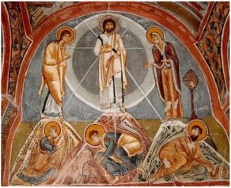

0200 Messianism independent of Apocalypticism emerges. The Machabees avoid references to Messianism because they are not Davidic, but were usurpers. Messianism is intended to be restorative, directed inward, and in accord with natural laws. Sometimes theory has two Messiahs: a king and a priest, Moses and Aaron. Apocalypticism is, on the other hand, utopian, eschatological, directed outward, supernatural, not necessarily Messianic; the Messiah would gather the banished Is 11:12.

Participatory Messianism